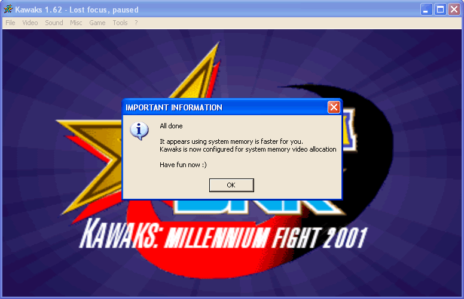
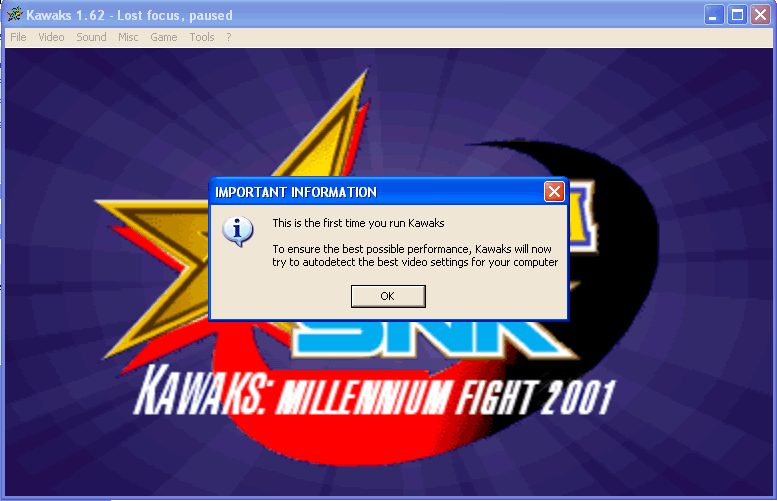
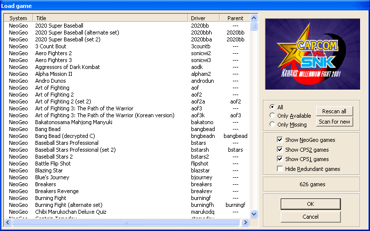

WinKawaks 从零上手：装模拟器、放 ROM、调画面，一气呵成
第一次碰 WinKawaks？这篇教程带你从零走到能打开《拳皇 97》开打——下载解压、ROM 目录结构、Rescan all 重新扫描、画面滤镜和宽高比，一步不落地过一遍。
读完这篇，你能从零装好 WinKawaks、放进 ROM、配好画面滤镜和按键，然后打开《拳皇 97》痛快玩一局。
WinKawaks 是 PC 上专门啃三大经典街机基板的模拟器——Capcom CPS1、CPS2 和 SNK Neo Geo，《拳皇》《合金弹头》《街头霸王 Alpha》《吸血鬼猎人》全在它的覆盖范围内。和 MAME 那种"广撒网"路线不同，Kawaks 就盯着这三块板子往深了做，兼容性和画面还原度在格斗玩家圈子里有口皆碑。它的kawaks官网也长期维护着游戏兼容性清单和版本更新日志，查哪款 ROM 能不能跑非常方便。而且它本身就是个轻量货，P166 + 32MB 内存就能跑，Win11 也没问题。

准备：就两个前提
- Windows 就行，98 到 11 通吃，不用装任何运行库。
- ROM 文件——你自己合法拥有的街机 ROM，放到模拟器的
roms/目录里。另外 Neo Geo 基板的游戏（《拳皇》《合金弹头》都是这一类）必须额外有一份neogeo.zipBIOS，这个东西也要放在roms/根目录，不能塞进子文件夹。
第一步：下载解压，双击就能跑
先从kawaks下载拿到压缩包，解压到你想放的位置——桌面、D 盘、任何地方都行，它不写注册表、不依赖系统路径，纯绿色。解压完你会看到根目录下有个 Winkawaks.exe，双击启动。
弹出来的就是主界面，左边一排菜单，中间是载入游戏的对话框，这就是它的全部了——简洁得像 2001 年的软件。

第二步：ROM 放对位置才扫得出来
解压后的 WinKawaks 根目录里已经有一个空的 roms/ 文件夹。ROM ZIP 文件就直接丢进这个目录里。如果你想分类放，也可以在 roms/ 下面建 cps1/、cps2/、neogeo/ 子目录，模拟器会递归扫描。
一个容易踩的坑：neogeo.zip BIOS 必须放在 roms/ 根目录，不能扔进 roms/neogeo/ 子文件夹。放错了的话，所有 Neo Geo 游戏（拳皇、合金弹头、侍魂……）都会显示成灰色残缺条目。
第三步：Rescan all，让游戏列表刷新
ROM 放完别以为列表会自己冒出来——WinKawaks 不会启动时自动扫描，你得手动点一下重新扫描按钮。
在 File → Load Game 打开的载入对话框底部右侧，有一个按钮就叫 Rescan all。点之前把 Only Available 勾上，这样扫完列表只显示 CRC 完整校验通过的游戏，灰色残缺的不会出现。
扫描是纯只读操作，不会修改任何文件，放心点。几百款 ROM 扫几十秒，几千款也就几分钟。扫完对话框自动刷新，你刚才放进去的游戏名应该都列出来了。

扫完还是找不到？按这个顺序排查：
neogeo.zip是不是放对目录了？- ROM ZIP 的 CRC32 和模拟器内部的 ROM 对照表匹配吗？用 RomCenter 或 CLRMamePro 校验一下。
- ZIP 外层有没有被套娃？比如里面又套了一层
rom.zip。 - Bootleg 盗版本的 ROM 模拟器可能不认。
碰到疑难杂症时kawaks文档里还有更详细的 CRC 校验方法和 BIOS 位置排查指南，可以翻一翻对照看。
第四步：画面调清晰，别浪费你的显示器
默认的 WinKawaks 画面是线性拉伸，窗口拉大后像素糊成一团，锯齿也重。三步把画面救回来：
换像素锐化滤镜。 载入任意游戏后打开 Video 菜单，把当前滤镜从 Linear / Bilinear / None 改成 Super 2×SaI 或 Super Eagle。改完立即能看到效果——像素硬朗了，锯齿也少了大半。Super Eagle 比 Super 2×SaI 更温和一点，个人偏好。
锁定宽高比。 街机原始分辨率都是 4:3，拖拽窗口时不锁比例会把画面拉成 16:9，角色身材变形。Video 菜单里勾选 Keep Aspect Ratio（有的版本叫 Lock Aspect Ratio），之后窗口怎么拉画面都是正的，两侧出现黑边是正常的 letterbox，那才是正确的显示方式。
关闭操作系统高 DPI 缩放。 如果你是 2K/4K 显示器，Windows 默认的 200% 缩放会让 WinKawaks 被二次缩放，糊上加糊。右键 Winkawaks.exe → 属性 → 兼容性 → 勾选"高 DPI 缩放替代" → 下拉框选"应用程序"。改完重启模拟器生效。
第五步：按键配置，手柄键盘都行
模拟器默认键位能玩，但别扭——F1 投币、1 开始、方向键移动、J/K/L 拳脚，先按自己习惯改一遍。
载入游戏后打开 Game → Redefine Keys → Redefine Keys Player 1，进入按键重定义界面。光标移到要改的那一行，直接按你想映射的键位就行，手柄也能识别。改完记得点 OK 保存，下次进游戏沿用这套配置。
新手最容易翻车的三个卡点
卡点一：Rescan all 后游戏列表全灰。 99% 是 neogeo.zip 没放对位置。拿出来扔 roms/ 根目录，再点一次 Rescan all。
卡点二：画面模糊像蒙了一层雾。 先去 Video 菜单确认滤镜是不是还停在 Linear——老版本有些场景会自动切回去。如果滤镜已经是 Super 2×SaI 还是糊，查一下是不是高 DPI 缩放没关。
卡点三：按键按了没反应。 可能是游戏要求投币（F1）才能开始。也可能是键位被你改乱了，直接去 Redefine Keys 恢复默认再改一遍。
往下还能玩什么
搞定单机只是起点——Kaillera 联机对战、F5 即时存档和 F7 读档（打不过就存档）、saves 目录整个复制到另一台电脑迁移进度、甚至可以开 Scanlines 扫描线滤镜还原街机 CRT 那种复古质感。这套资料在GitHub、Gitee、GitCode三处都有同步更新，选你顺手的就行。这些都是进阶玩法，但先把基础的五步走通再说。